Q.1
The triangle ABC, where A is-(2, 6), B (-3, 5) and C is-(4, 7), is reflected in the y-axis to triangle A'B'C'. Triangle A'B'C' is then reflected in the origin to triangle A"B"C".
(i) Write down the co-ordinates of A", B" and C".
(ii) Write down a single transformation that map triangle ABC onto triangle A"B"C" . Solution 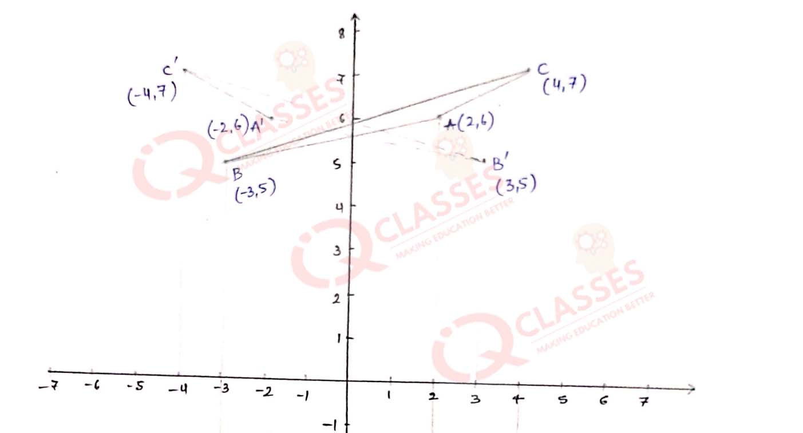 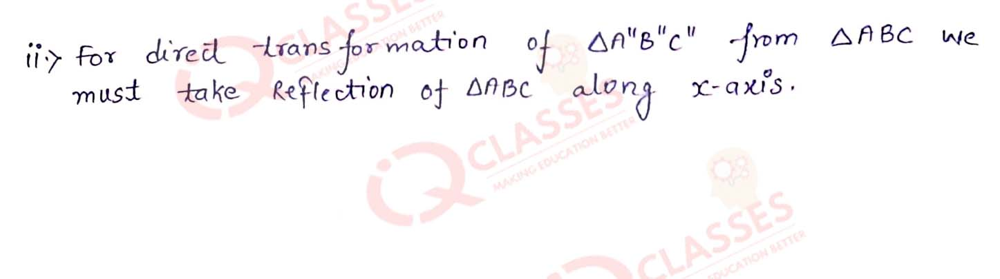
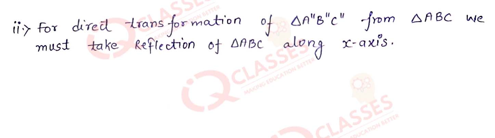
(i) Write down the co-ordinates of A", B" and C".
(ii) Write down a single transformation that map triangle ABC onto triangle A"B"C" . Solution 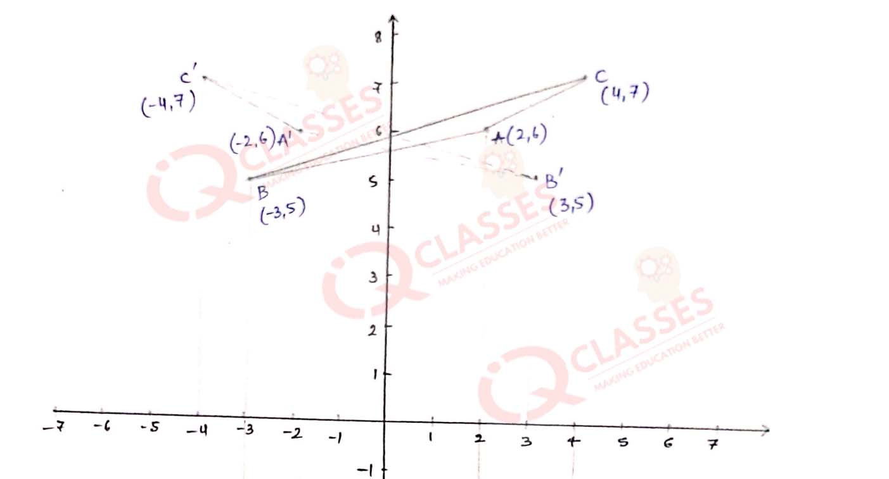
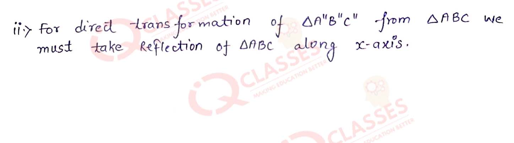
Q2
Points (-5, 0) and (4, 0) are invariant points under reflection in the line L1; points (0, - 6) and (0, 5) are invariant on reflection in the line L2.
(a) Name or write equations for the lines L1 and L2.
(b) Write down the images of P(2, 6) and Q (-8, -3) on reflection in L1. Name the images as P' and Q' respectively.
(c) Write down the images of P and Q on reflection in L1. Name the images as P" and Q" respectively.
(d) State or describe a single transformation that maps Q' onto Q". Solution 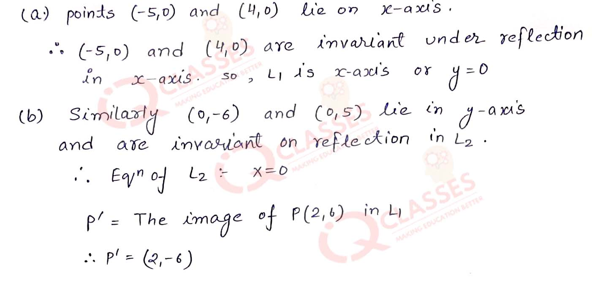 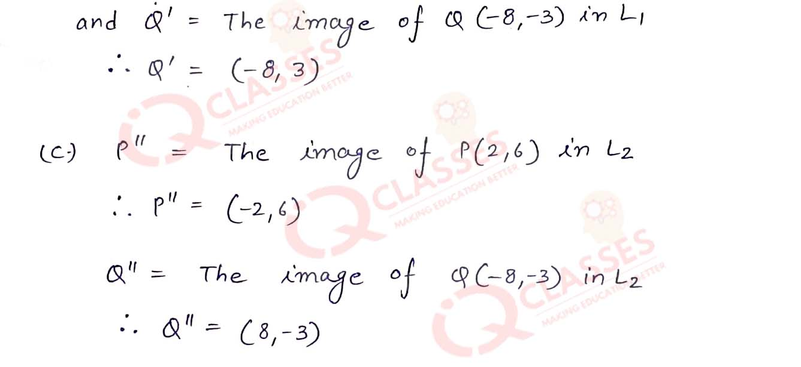
(a) Name or write equations for the lines L1 and L2.
(b) Write down the images of P(2, 6) and Q (-8, -3) on reflection in L1. Name the images as P' and Q' respectively.
(c) Write down the images of P and Q on reflection in L1. Name the images as P" and Q" respectively.
(d) State or describe a single transformation that maps Q' onto Q". Solution 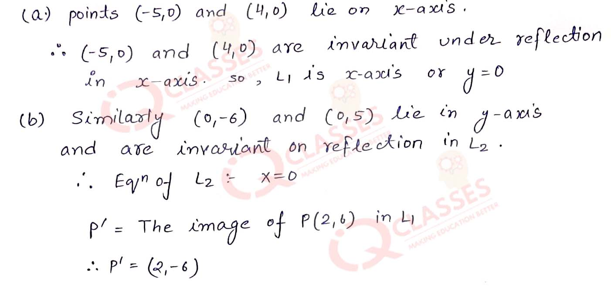 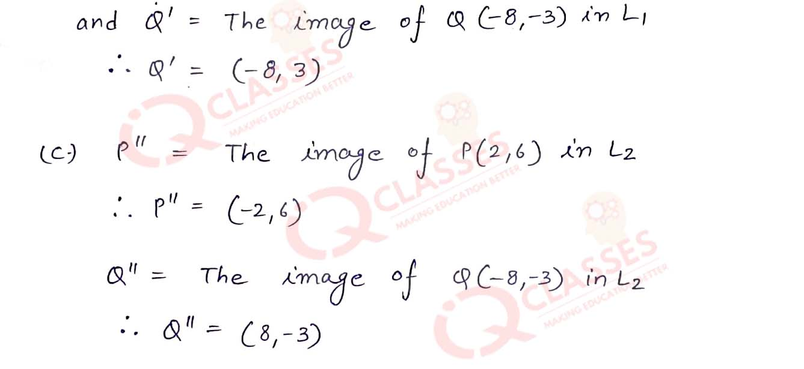
Q3
The points P(5, 1) and Q(-2, -2) are reflected in line x = 2. Use graph paper to find the images P' and Q' of points P and Q respectively in line x = 2. Take 2 cm equal to 2 units.
Solution
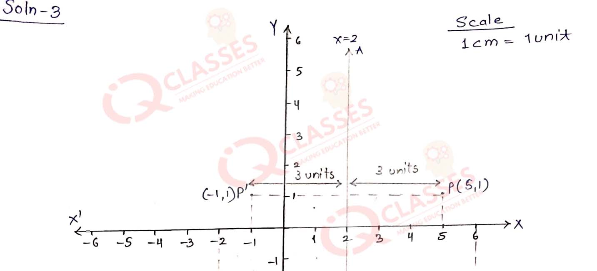
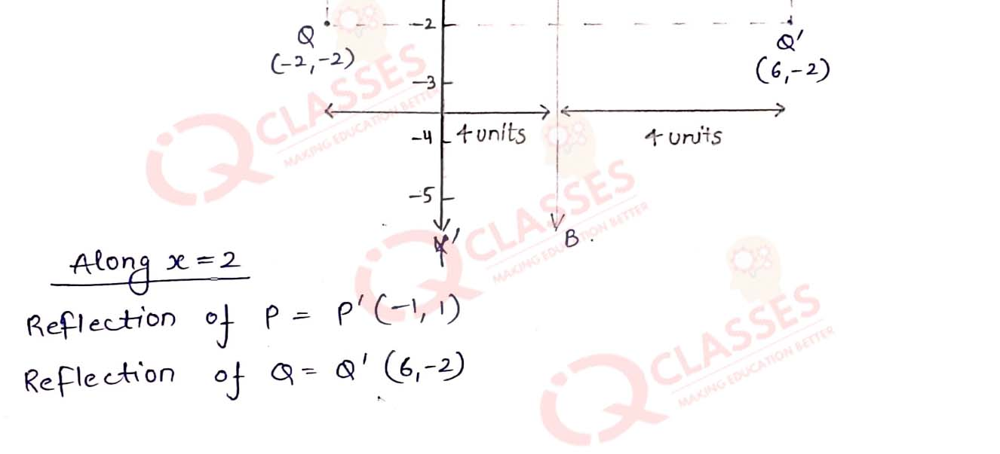
Q4
Use a graph paper for this question. (Take two divisions = 1 unit on both the axes). Plot the points P (3, 2) and Q (-3, -2). From P and Q, draw perpendiculars PM and QN on the x-axis.
(a) Write the co-ordinates of points M and N.
(b) Name the image of P on reflection in the origin.
(c) Assign the special name to geometrical figure PMQN and find its area.
(d) Write the co-ordinates of the point to which M is mapped on reflection in :
(i) x-axis,
(ii) y-axis,
(iii) origin. Solution 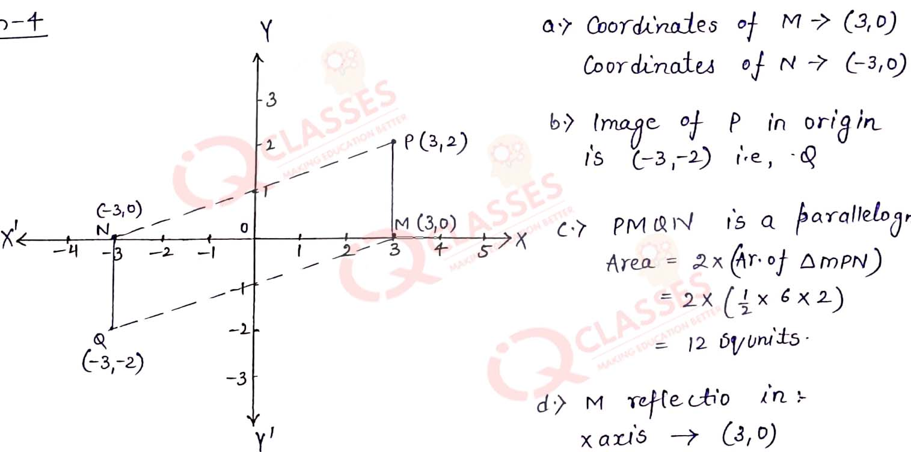 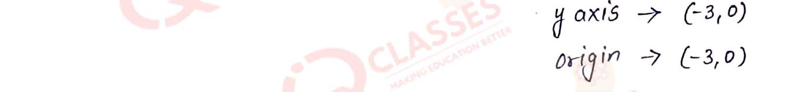
(a) Write the co-ordinates of points M and N.
(b) Name the image of P on reflection in the origin.
(c) Assign the special name to geometrical figure PMQN and find its area.
(d) Write the co-ordinates of the point to which M is mapped on reflection in :
(i) x-axis,
(ii) y-axis,
(iii) origin. Solution 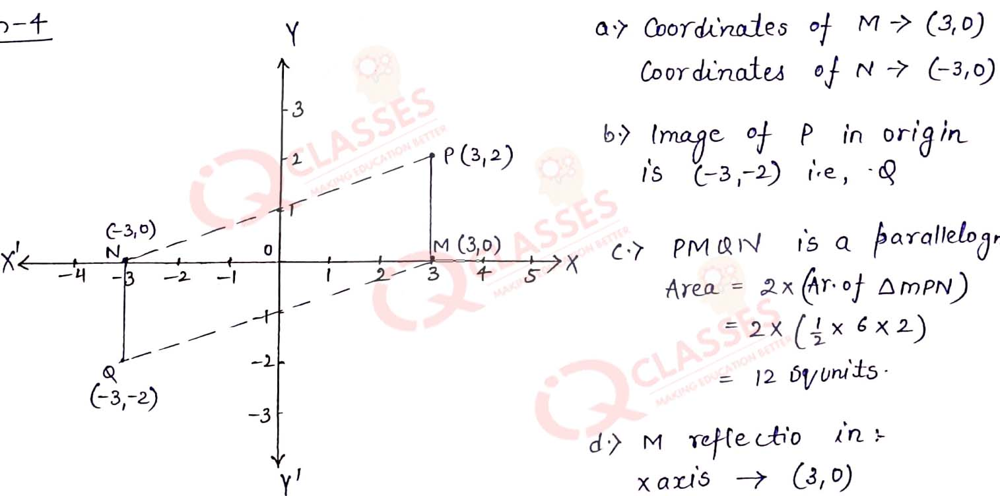 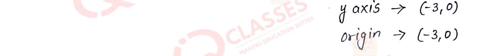
Q5
Points A and B have co-ordinates (3, 4) and (0, 2) respectively. Find the image :
(a) A' of A under reflection in the x-axis.
(b) B' of B under reflection in the line AA'.
(c) A" of A under reflection in the y-axis.
(d) B" of B under reflection in the line AA". Solution 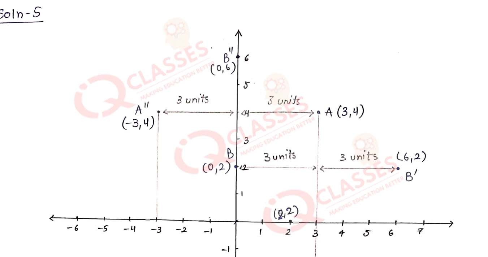 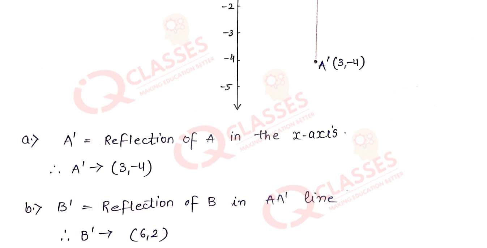 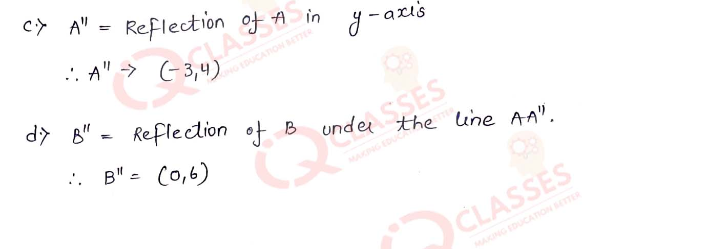
(a) A' of A under reflection in the x-axis.
(b) B' of B under reflection in the line AA'.
(c) A" of A under reflection in the y-axis.
(d) B" of B under reflection in the line AA". Solution 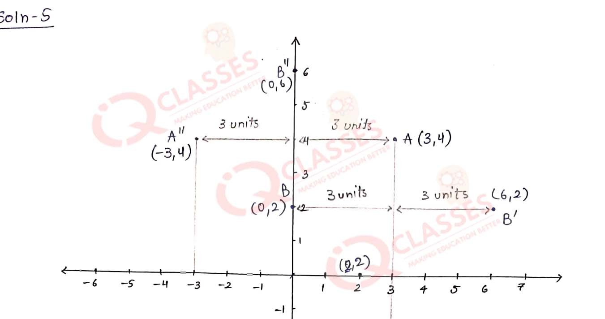 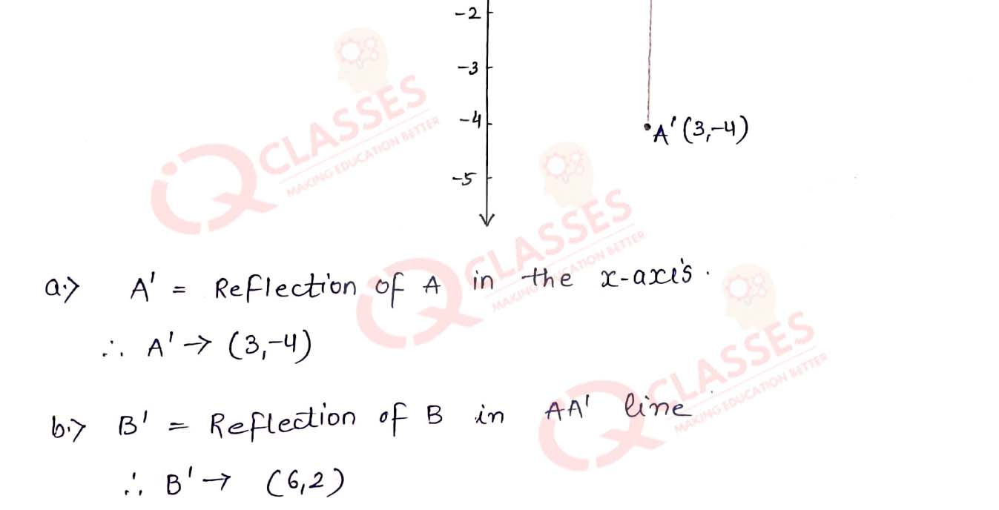 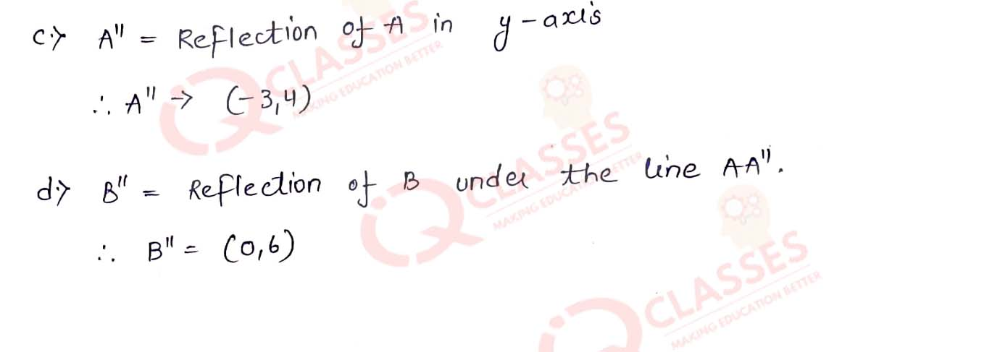